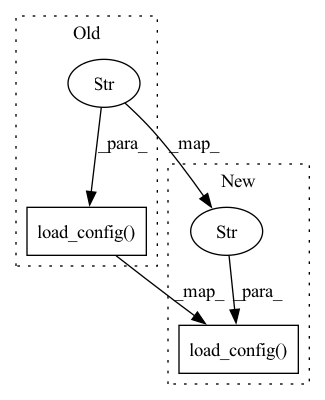

Pattern ID :7277

Before Change
request_size=request_size
)
elif task == "query-restful":
f = Flow().load_config("flow-query.yml")
f.use_rest_gateway()
with f:
f.block()
else:
After Change
request_size=request_size
)
elif task == "query-restful":
with Flow().load_config("flow-query.yml") as f:
f.use_rest_gateway()
f.block()
else:
In pattern: SUPERPATTERN
Frequency: 4
Non-data size: 2
Instances
Fragment ID: 24342354
Project Name: jina-ai/examples
Commit Name: ddbaad65b4634b04b06c4a437997bab88d604b5c
Time: 2021-03-01
Author: bo.wang@jina.ai
File Name: cross-modal-search/app.py
M Class Name: AnonimousClass
N Class Name: AnonimousClass
M Method Name: main(4)
N Method Name: main(4)
M Parent Class:
N Parent Class:
M File Name: cross-modal-search/app.py
N File Name: cross-modal-search/app.py
M Start Line: 61
M End Line: 70
N Start Line: 61
N End Line: 68
'>
Before Change
def main(index_num_docs, evaluate_num_docs, request_size, data_set, model_name, evaluation_mode):
config(model_name)
if index_num_docs > 0:
with Flow.load_config("flows/flow-index.yml") as f:
f.use_rest_gateway()
f.index(
input_fn=input_index_data(index_num_docs, request_size, data_set),
After Change
def main(index_num_docs, evaluate_num_docs, request_size, data_set, model_name, evaluation_mode):
config(model_name)
if index_num_docs > 0:
f = Flow.load_config("flows/flow-index.yml")
with f:
f.use_rest_gateway()
f.index(
inputs=input_index_data(index_num_docs, request_size, data_set),
'>
Fragment ID: 24342352
Project Name: jina-ai/examples
Commit Name: a74ecfc737fc5ee6748f90ab4cb2249e1c8d894b
Time: 2021-07-05
Author: zhuoran2@andrew.cmu.edu
File Name: cross-modal-search/evaluate.py
M Class Name: AnonimousClass
N Class Name: AnonimousClass
M Method Name: main(6)
N Method Name: main(6)
M Parent Class:
N Parent Class:
M File Name: cross-modal-search/evaluate.py
N File Name: cross-modal-search/evaluate.py
M Start Line: 97
M End Line: 97
N Start Line: 101
N End Line: 101
'>
Before Change
input_fn=input_index_data(num_docs, request_size, data_set),
request_size=request_size
)
flow_eval = Flow().load_config("flow-query.yml")
flow_eval.add(name="evaluator", uses="yaml/evaluator.yml")
with flow_eval:
flow_eval.search(input_fn=evaluation_generator, on_done=print_evaluation_score)
After Change
input_fn=input_index_data(num_docs, request_size, data_set),
request_size=request_size
)
flow_eval = Flow().load_config("flow-query.yml").add(name="evaluator", uses="yaml/evaluator.yml")
with flow_eval:
flow_eval.search(input_fn=evaluation_generator, on_done=print_evaluation_score)
'>
Fragment ID: 24342356
Project Name: jina-ai/examples
Commit Name: f424bcd84d76b61cd1d54a33fb5e0541feb8e43b
Time: 2021-03-02
Author: bo.wang@jina.ai
File Name: cross-modal-search/evaluate.py
M Class Name: AnonimousClass
N Class Name: AnonimousClass
M Method Name: main(4)
N Method Name: main(4)
M Parent Class:
N Parent Class:
M File Name: cross-modal-search/evaluate.py
N File Name: cross-modal-search/evaluate.py
M Start Line: 112
M End Line: 113
N Start Line: 115
N End Line: 115
'>
Before Change
num_docs = min(num_docs, len(glob(os.path.join(os.getcwd(), IMAGE_SRC),
recursive=True)))
f = Flow.load_config("flows/index.yml")
with f:
f.index(inputs=DocumentArray.from_files(IMAGE_SRC, size=num_docs),
request_size=64, read_mode="rb")
After Change
num_docs = min(num_docs, len(glob(os.path.join(os.getcwd(), IMAGE_SRC),
recursive=True)))
with Flow.load_config("flows/index.yml") as flow:
flow.index(inputs=DocumentArray.from_files(IMAGE_SRC, size=num_docs),
request_size=64, read_mode="rb")
'>
Fragment ID: 24342349
Project Name: jina-ai/examples
Commit Name: f7e0191f8792cfd23956c6eaddcee9c834fcbd6f
Time: 2021-05-28
Author: jakob.kruse@jina.ai
File Name: pokedex-with-bit/app_yml.py
M Class Name: AnonimousClass
N Class Name: AnonimousClass
M Method Name: index(1)
N Method Name: index(1)
M Parent Class:
N Parent Class:
M File Name: pokedex-with-bit/app_yml.py
N File Name: pokedex-with-bit/app_yml.py
M Start Line: 31
M End Line: 31
N Start Line: 31
N End Line: 31